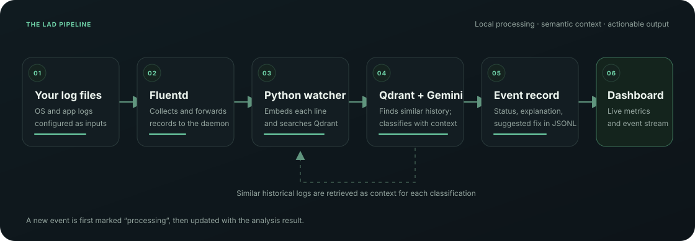

Collect from real sources
Fluentd tails configured system or application logs and writes records for the analysis process to follow.
LAD watches your system logs, finds similar past events, and uses that context to flag anomalies with an explanation and a suggested next step.
LAD combines live log collection with retrieval augmented analysis. Every new line is compared with the history before it is classified.

Architecture overview · historical matches from Qdrant are supplied as context to the classifier.
Fluentd tails configured system or application logs and writes records for the analysis process to follow.
Gemini embeddings and Qdrant similarity search find related log lines, so classification can consider previous patterns.
Classifications are stored with status, anomaly type, explanation, confidence, and suggested fix when available.
The Python worker follows Fluentd output, records progress, searches related vectors, and then asks the model to classify the event.
Fluentd tails the paths configured for your OS and emits records into daemon/logs.
The worker embeds a new message and adds it to the configured Qdrant collection.
Similarity search returns up to three related records to give the classifier useful history.
Gemini returns structured analysis; LAD appends updates to dashboard_events.jsonl.
Use Python 3, Docker for Fluentd and Qdrant, and a Google AI Studio API key. Configure log paths that exist on your machine before starting.
Full setup notes ↗# Clone and install git clone https://github.com/CrAnish07/LAD.git cd LAD python3 -m venv venv && source venv/bin/activate pip install -r requirements.txt # Add GOOGLE_API_KEY to .env and set log paths cp .env.example .env # Start ingestion and analysis ./operate.sh 300 # In another terminal, start the local dashboard venv/bin/python scripts/dashboard.py
Open http://127.0.0.1:8080. To generate sample traffic while the pipeline is running: venv/bin/python scripts/demo_load.py.
The local dashboard reads the event JSONL file and checks whether Fluentd and Qdrant are reachable. It refreshes every three seconds while your pipeline runs.
The dashboard is served by the local Python app. The GitHub Pages project site itself is static.
Read the setup notes, inspect the pipeline, and adapt LAD to your environment.